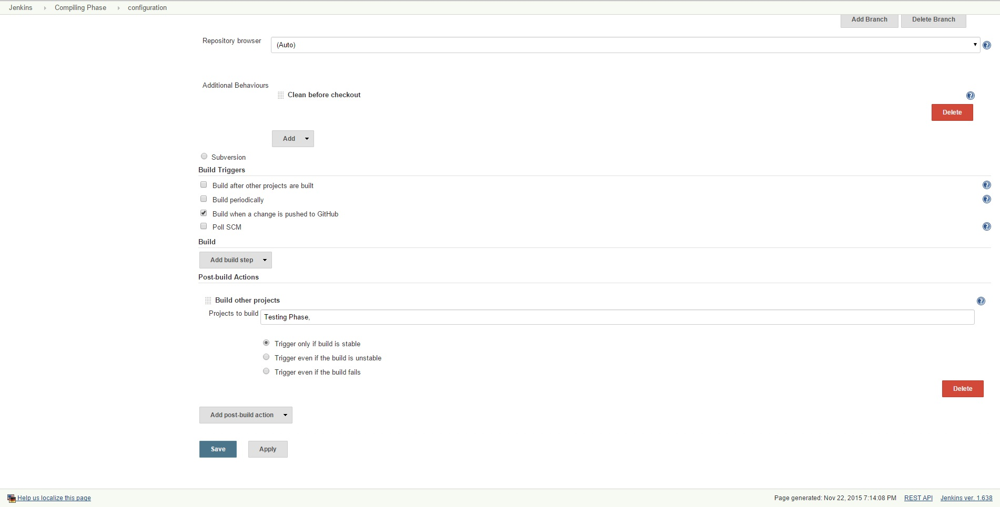

With tests let's have our app be tested every time we build successfully. Go back to your compilation job and select "Build other projects" under the "Post-build Actions" section, you can choose whether to "Trigger only if build is stable", which is great for compiled jobs.
If you aren't dealing with critical pieces or you are linking a test job, for example, then "Trigger even if the build is unstable" or "Trigger even if the build fails" may be good choices instead. In the field for "Projects to build" add your testing job. 